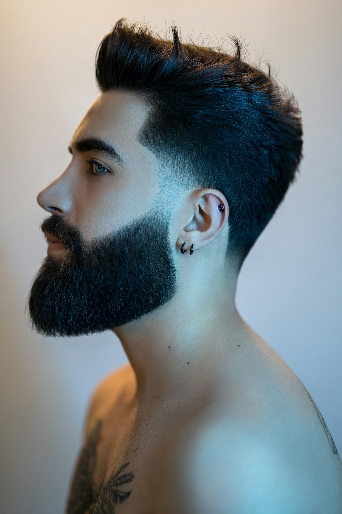
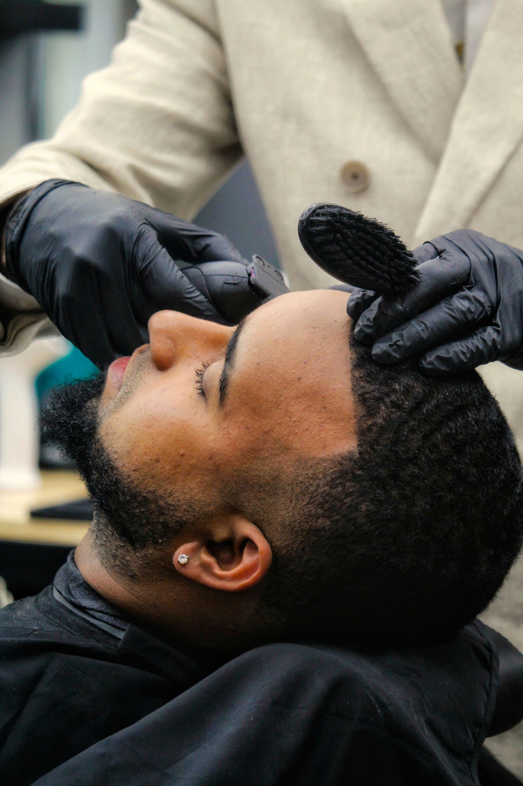
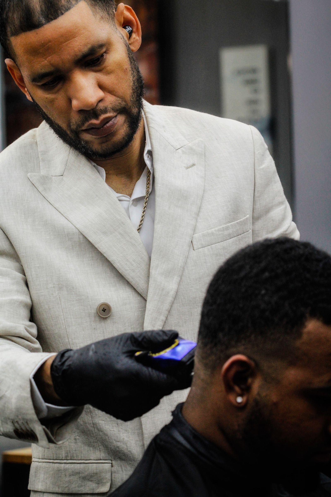
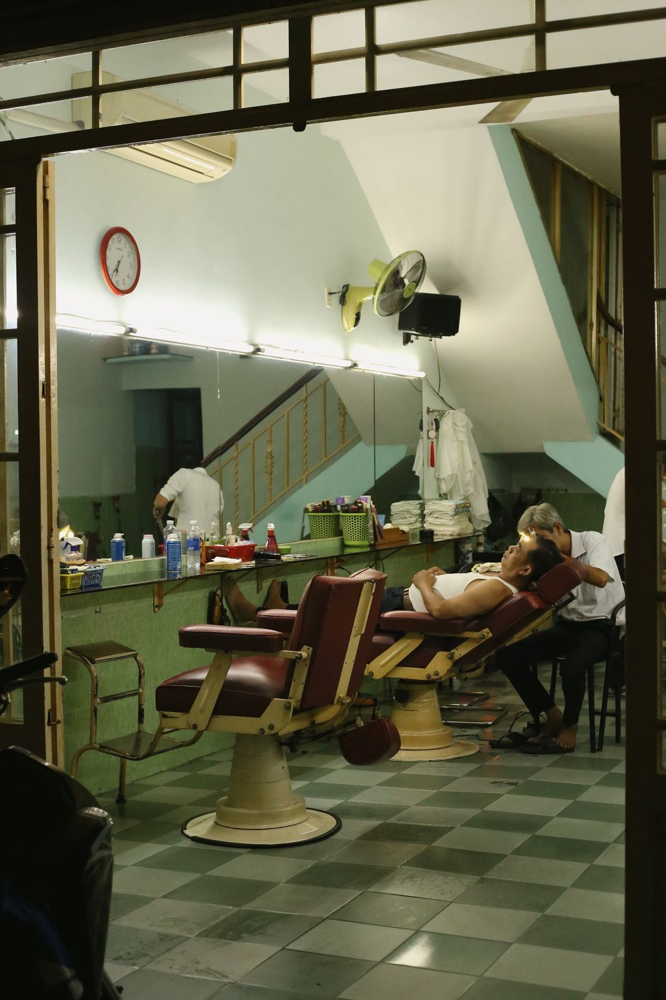
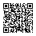

Drei Plätze, ein Anspruch: Jeder im Team bekommt ein eigenes professionelles Porträt und ein klares Profil. Namen und Schwerpunkte sind Platzhalter und werden im Teamgespräch festgelegt.
Platzhalter-Porträts Lizenzfreie Beispielfotos (Symbolbilder) — die echten Team-Porträts folgen nach Bildfreigabe durch den Salon.

Beispielfoto
Mitarbeiter · Profilentwurf
Leon
Leons Profil steht im Entwurf für saubere Übergänge, klare Konturen und einen ruhigen Terminablauf.
Max, Leon und Lena sind Beispiel-Namen dieser Konzeptvorschau. Echte Namen, Rollen, Stärken und Bildfreigaben werden vor dem Livegang übernommen.
03
Mitarbeiter
01
klarer Kalender
00
unnötige Warteschlangen
So einfach geht's
Drei Schritte. Dann sitzt du.
Keine Anrufschleife, kein Raten, keine volle Sitzbank. Der Kalender zeigt nur Zeiten, die zur gewählten Leistung, deinem Friseur und dem Arbeitsplatz passen.

01
Leistung wählen
Haarschnitt, Bartpflege oder Komplettservice – wähle, was zu deinem Look passt.

02
Friseur wählen
Lerne das Team kennen und entscheide, wer deinen Look übernimmt.
03
Zeit reservieren
Freie Uhrzeit auswählen, Daten eingeben und Termin direkt bestätigen.
Terminplaner · Prototyp
Probier den neuen Ablauf.
Diese Demo verbindet die Terminbuchung mit dem Teamkalender. Beispielvorgänge bleiben nur in diesem Browser-Tab.
Leistung wählen. Freie Zeit finden.
Wähle eine Person und einen Termin in der Beispielwoche. Deine Buchung erscheint anschließend direkt im Teamkalender des Salons.
Beispieldaten nur in diesem Browser-Tab · kein Versand
Leistungen · Vorschlag
Klar wählen. Passend planen.
Die Kategorien sind ein Startpunkt für das Gespräch. Preise, Dauer und genaue Inhalte werden nicht erfunden, sondern vom Salon bestätigt.
01 · Cut
Haarschnitt
Beratung, Schnitt und Styling – Dauer und Preis werden gemeinsam festgelegt.
02 · Beard
Bartpflege
Form, Kontur und Pflege als eigene buchbare Leistung – Details noch offen.
03 · Complete
Schnitt & Bart
Ein kombinierter Termin mit ausreichend Zeit, ohne doppelte Wartephase.
04 · Young
Kids & Teens
Als mögliche Kategorie vorgemerkt; Altersgrenzen und Ablauf werden bestätigt.

Beispielfoto (Symbolbild)
Der Laden · CLEAN CUT
Holz. Schwarz. Dein Style.
So dunkel, warm und markant kann die Salon-Galerie wirken — hier als Beispielfoto (Symbolbild). Die echte Theke und das vorhandene Logo geben der finalen Website später ihren eigenen Charakter.
Echte Salonfotos folgen nach Freigabe — Logo- und Produktrechte vor Veröffentlichung bestätigen.
QR am Eingang
Scannen. Termin sehen. Wiederkommen.
Der QR-Code führt direkt auf die kurze Terminseite. Im Salon kann der bestätigte Kunde später zusätzlich mit „Ich bin da“ einchecken.
Am Schaufenster – auch außerhalb der Öffnungszeiten
Am Spiegel – nächsten Termin direkt sichern
Auf Karten – ohne Telefonnummer abtippen

Direkt zur Termin-Demo
Finale Domain und QR vor Druck gemeinsam bestätigen.
BETRIEBSANSICHT AUSPROBIEREN Öffentliche Konzeptvorschau · Beispieldaten · nur in diesem Browser-Tab
Interne Salonübersicht
Jeder sieht, was wichtig ist.
Diese Übersicht ist nur in der privaten Konzeptvorschau sichtbar. Auf der späteren Kunden-Homepage wird sie entfernt und ist nur nach Anmeldung erreichbar.